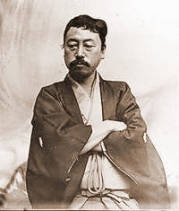

Úvod
Vítame vás na stránke Dobrej čajovne v Košiciach – v čajovni a obchode s čajom velejemným.
AKTUÁLNE INFORMÁCIE O NAŠOM FUNGOVANÍ!!
Momentálne čajovňa funguje len s PREDAJOM SYPANÉHO ČAJU a čaju pripraveného na spôsob TAKE AWAY!!!
Samozrejme, radi obslúžime každého, bez výnimky, kto si potrebuje dokúpiť zásoby prepotrebného sypaného čaju, bylín a čajového príslušenstva!
Ponuku čajov nájdete v sekcii ČAJOVÝ ESHOP
Značka táto registrovaná už tradične znamená garanciu najvyššej kvality čajov tu podávaných, rovnako tiež voľne predávaných, aj v rozličných originálnych krabičkách balených.


- Čerstvosť čajov je ručená Spolkom milcov čaju, priamym dovozcom z čajových záhrad z celého sveta.
- Príprava, podávanie a predaj čajov je v Dobrej čajovni v rukách vysoko odborných tovarišov, v čajových vedách široko orientovaných a rozličných postupov, grifov, trikov a tajomstiev znalých.
Okrem čajov sypaných ponúkame oddych pri vodnej fajke plnenej tabakmi chutí lahodných.
Pre potreby oddychu duševného a rozvoja osobnostného, pozývame vás na rôzne kurzy, cvičenia, prednášky, stretnutia a podujatia do nášho priestoru podkrovného.
Tešíme sa na vašu návštevu v Dobrej čajovni …
„Kult čaju je založený na obdivovaní krásy uprostred bežných udalostí všedného dňa. Skrýva v sebe čistotu a harmóniu, tajomstvo vzájomnej zhovievavosti a romantiku spoločenského poriadku. Je v zásade uctievaním nedokonalého, rovnako ako jemným pokusom o dovŕšenie čohosi možného v onom nemožnom, ktoré poznáme ako život.“
Kakuzo Okakura japonský znalec dejín umenia a autor Knihy o čaji
